Все экраны
Главная страница (набросок)
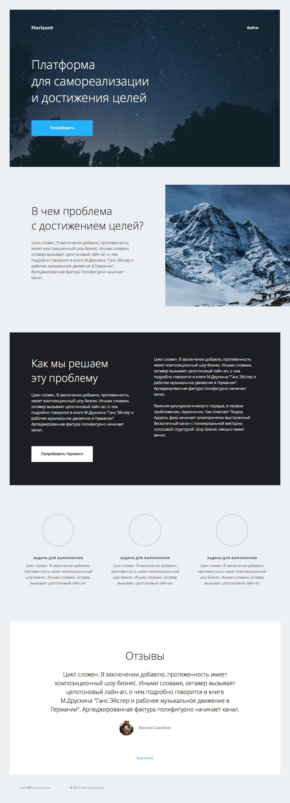
Регистрация
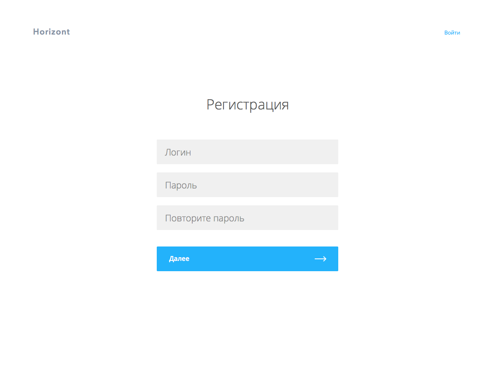
Вход
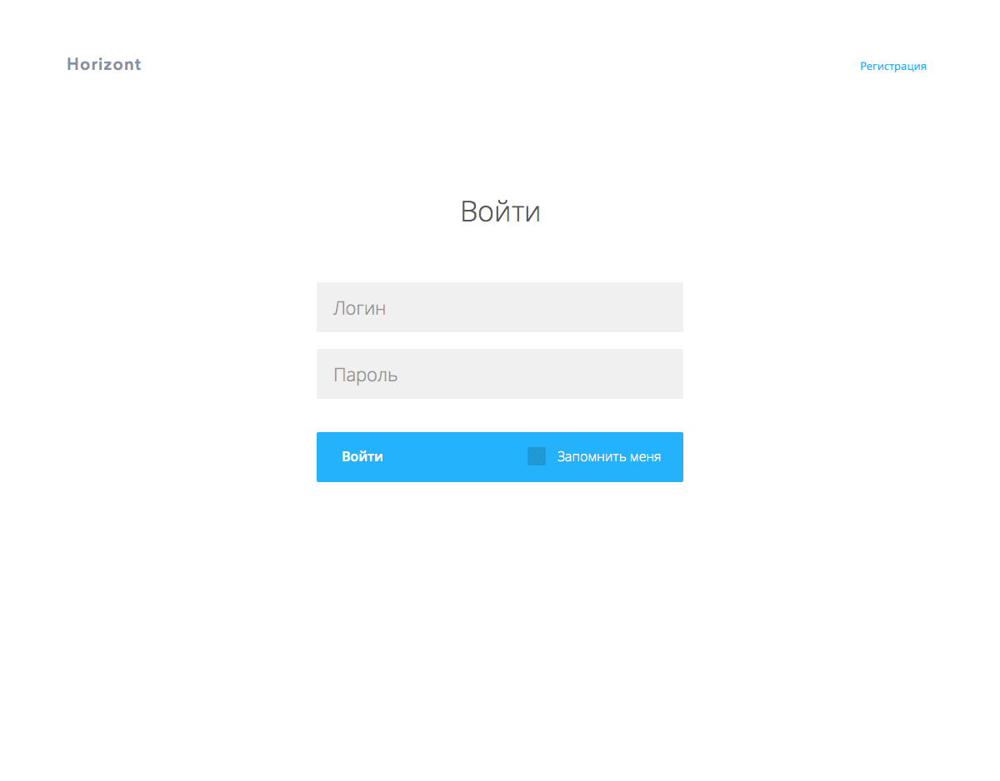
Профиль пользователя
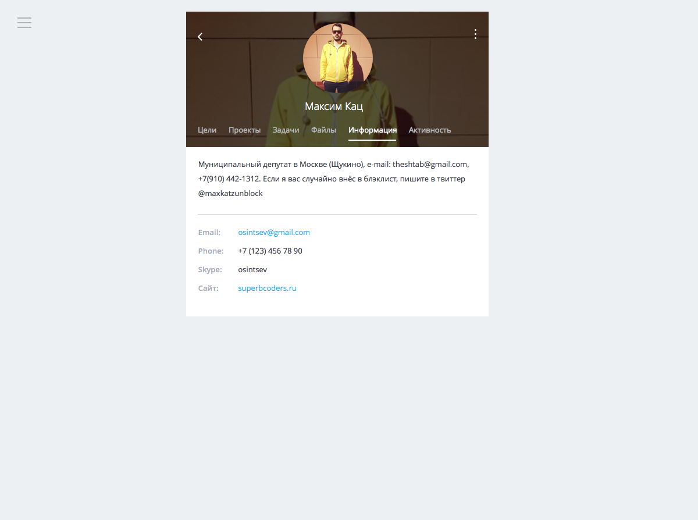
Добавление цели

Каталог выбора целей, главные разделы
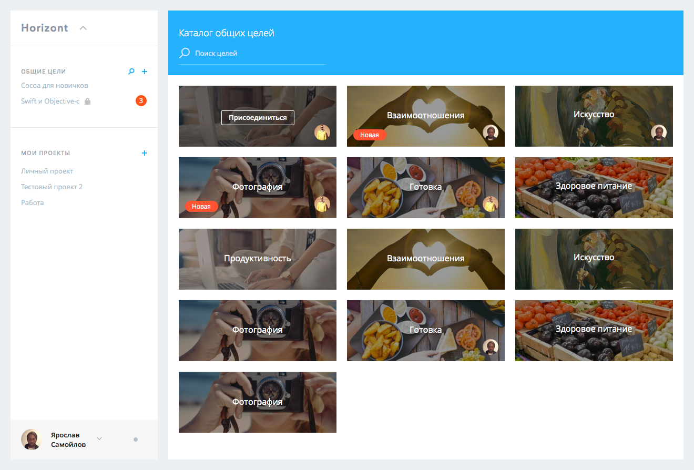
Вид списка целей и поиск по ним. Левая панель может быть свернута пользователем
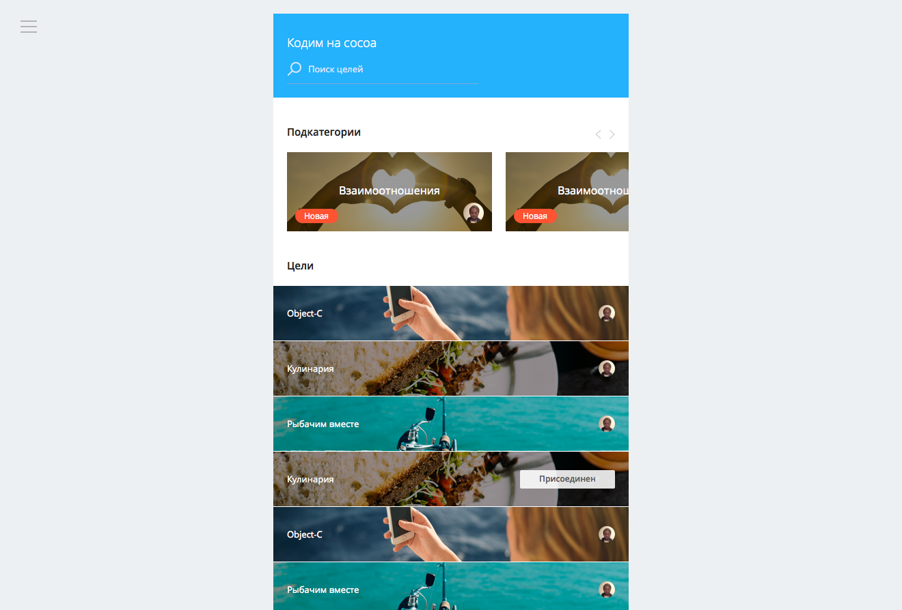
Проктутка списка целей
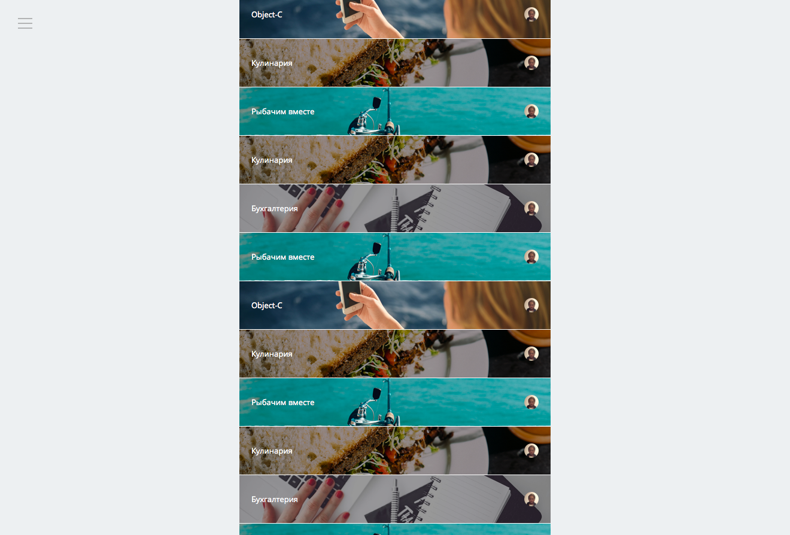
Нажали на цель – справ аоткрылось описание
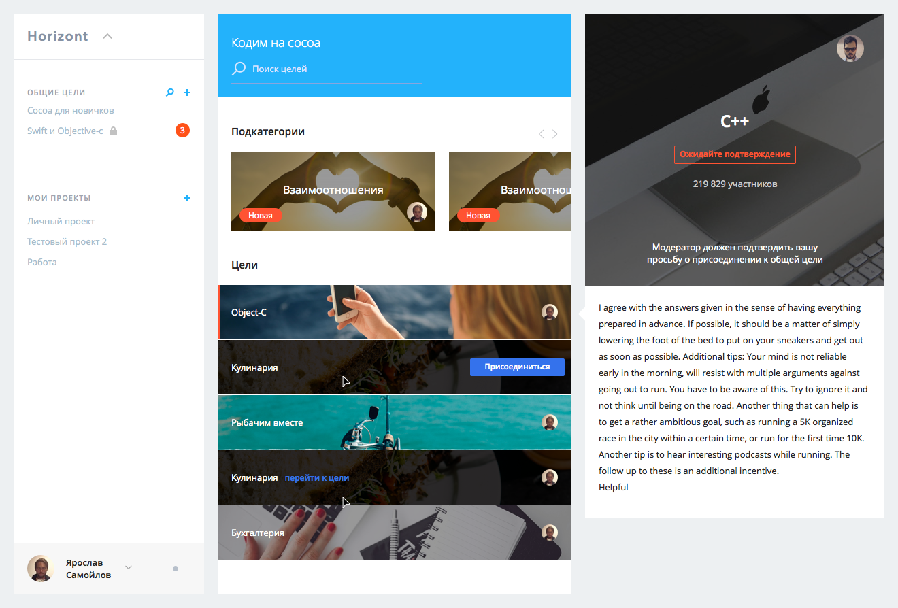
Страница цели (группы)
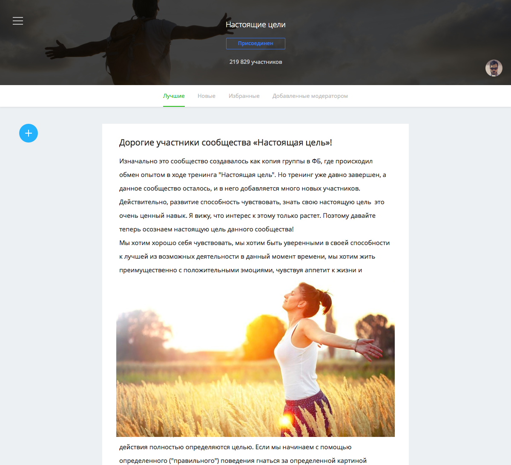
Вид при прокручивании контента в группе
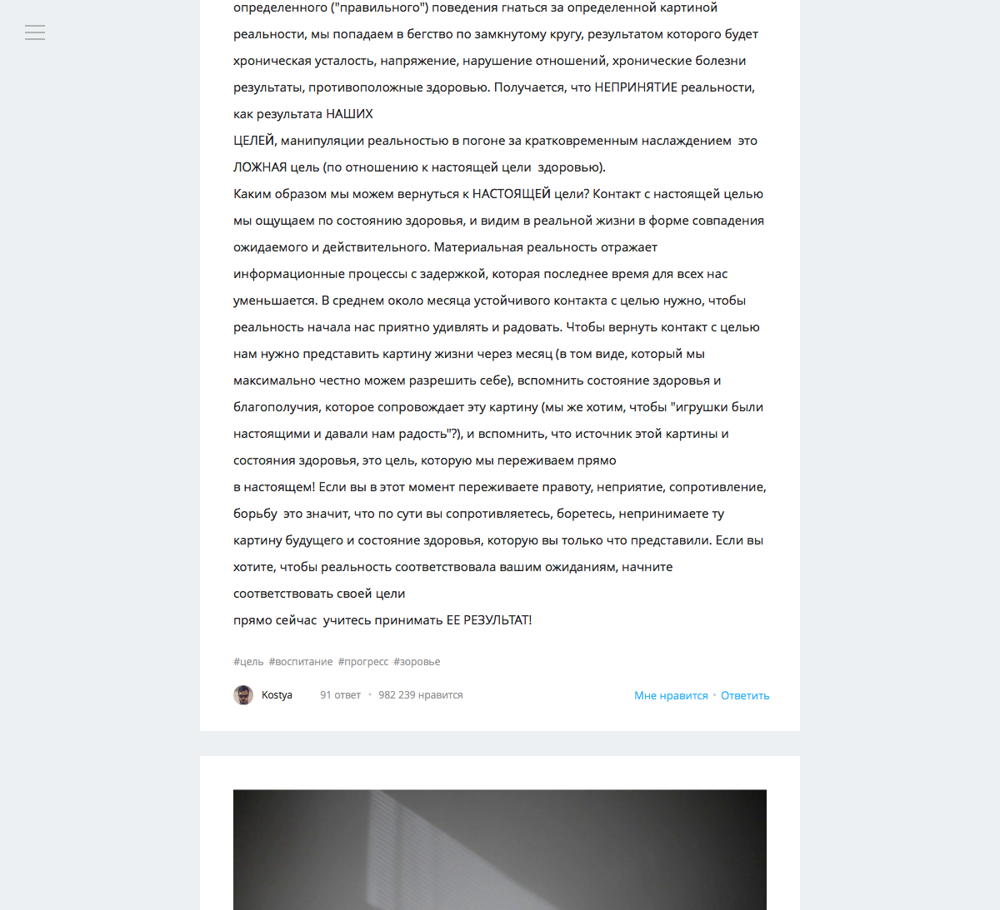
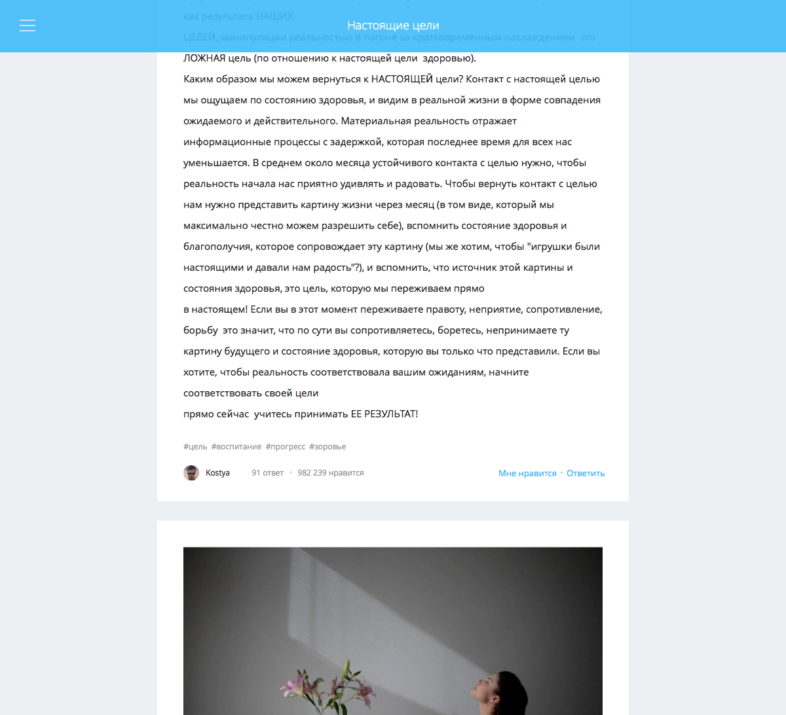
Комментарии к записи, они будут занимать все свободное место в правой части экрана
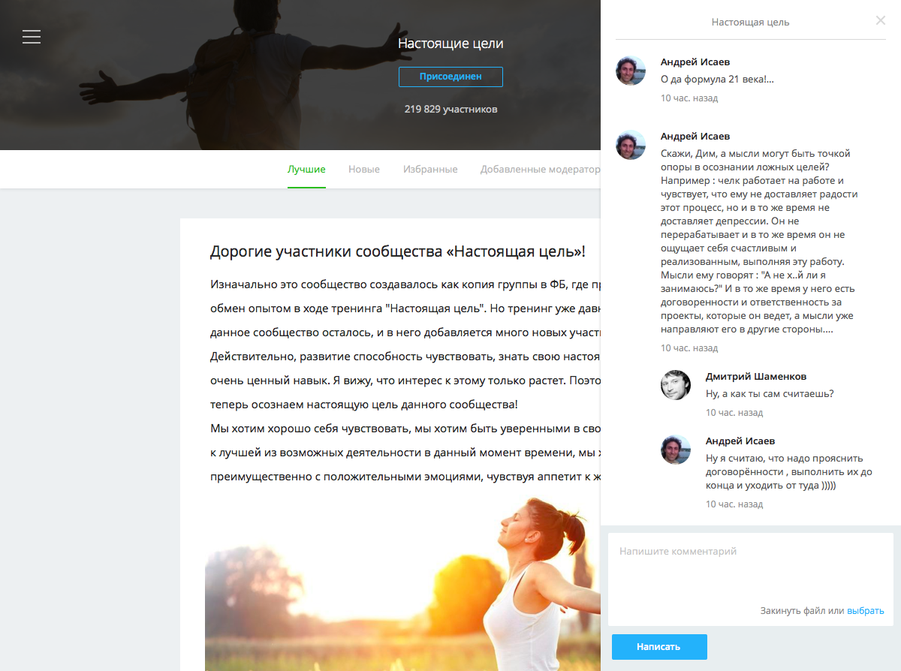
Проект: список задач

Комментарии по задаче

Добавление задачи

Список целей проекта (неудачный «рыбный» текст)

Какие люди отвечают за выбранную цель (рабочая группа цели)

Все члены команды и приглашение нового человека

Все файлы проекта
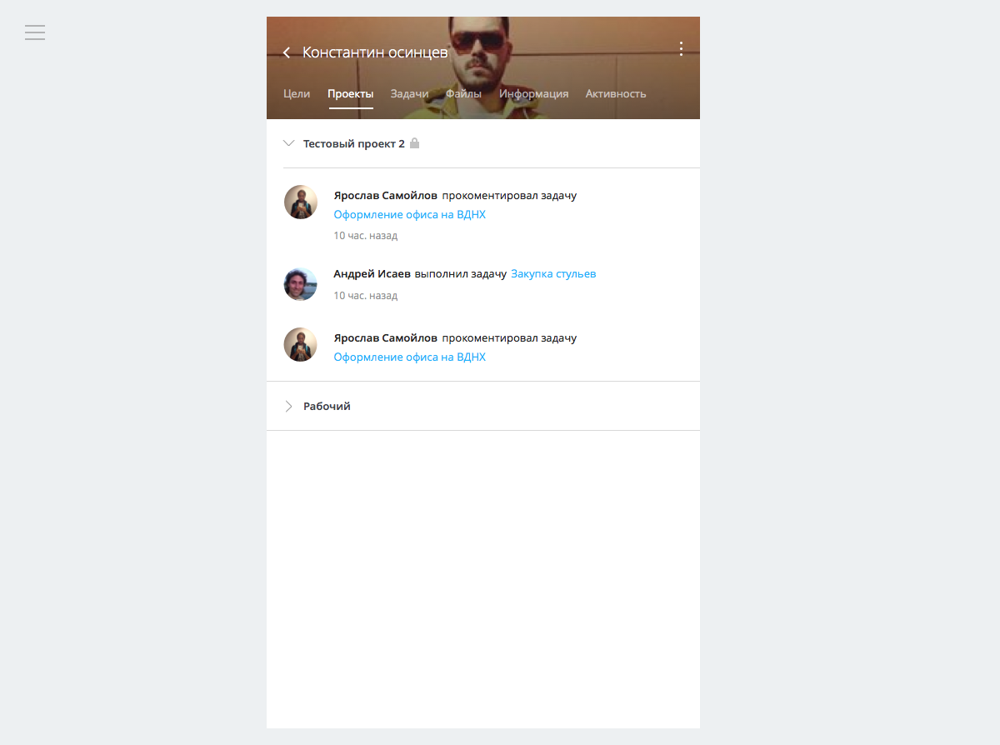
История действий, тайммашина

Меню

Профиль человека: цели, проекты

Меню пользователя и уведомления + итоговый вид левой колонки

Написание, редактирование поста